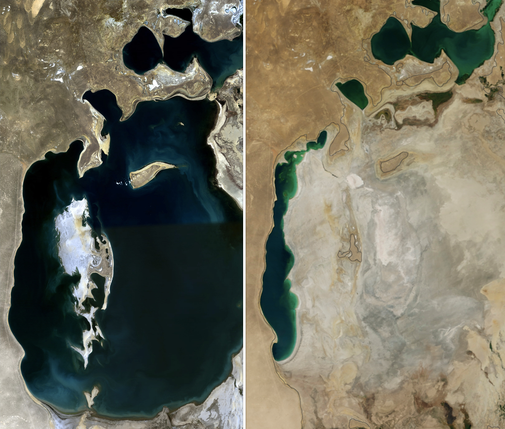

Трагедия Аральского моря: почему оно высохло, последствия и нынешнее состояние
Некогда один из крупнейших внутренних водоёмов Земли, Аральское море почти полностью исчезло за полвека. Это фактическая справка о причинах, последствиях и нынешних усилиях по восстановлению.

Аральское море — бессточный (замкнутый) водоём в Центральной Азии, расположенный между Узбекистаном и Казахстаном. В 1960 году его площадь составляла около 68 000 квадратных километров, и оно было четвёртым по величине внутренним озером мира (Источник: NASA Earth Observatory). За полвека оно потеряло более 90 процентов своего объёма — это событие называют одной из крупнейших рукотворных экологических катастроф в истории человечества. Эта справка на основе фактов объясняет, почему море высохло, какие последствия это вызвало и что делается сегодня для его восстановления.
Чем было Аральское море
Аральское море питали две крупные реки: Амударья с юга и Сырдарья с севера. Западное и южное побережья относятся к Республике Каракалпакстан в составе Узбекистана, а северная часть — к Казахстану. В 1960 году годовой приток в море составлял около 56 кубических километров, а глубина местами достигала 40 метров (Источник: Britannica; NASA Earth Observatory). Регион имел важное значение для рыболовства, судоходства и смягчения местного климата.
Причина: отвод рек
С 1960-х годов Советский Союз отвёл воды Амударьи и Сырдарьи по каналам для масштабного орошаемого земледелия в Центральной Азии — прежде всего хлопка ("белого золота") и риса (Источник: NASA Earth Observatory). В результате приток в море резко сократился: примерно с 56 кубических километров в 1960 году до менее чем 10 кубических километров в год к 1990-м годам (Источник: Britannica). Когда приток перестал компенсировать испарение, уровень моря упал, а берега начали отступать.

Этапы сокращения
Море неуклонно сокращалось с 1960-х годов. В 1987–1989 годах оно разделилось на две части: Северное (Малое) и Южное (Большое) Аральское море. Затем Южный Арал сам разделился на восточную и западную части. К 2001 году связь между южными частями была прервана, а мелкая восточная часть быстро отступала. Восточная котловина сокращалась особенно быстро в 2005–2009 годах, когда засуха ограничила, а затем прекратила сток Амударьи. В 2014 году восточная котловина Южного Арала полностью высохла (Источник: NASA Earth Observatory). Спутниковый снимок в этой статье сравнивает именно это изменение, показывая море в 1989 и в 2014 году.
Последствия: пустыня, пыльные бури и крах рыболовства
Там, где отступила вода, на обнажившемся дне образовалась новая пустыня — Аралкум. Её поверхность насыщена солью, остатками пестицидов и удобрений, которые ветер поднимает в воздух. По оценкам, ежегодно с Аралкума поднимается более 75 миллионов тонн токсичной пыли, которая может переноситься на расстояние до 500 километров (Источник: обзор международных экологических исследований). Муйнак (Mo'ynoq), некогда оживлённый портовый город, теперь находится в десятках километров от воды, а на берегу остались ржаветь суда. По мере роста солёности и исчезновения видов рыб рыболовство — основа экономики региона — полностью рухнуло.
Влияние на здоровье, климат и биоразнообразие
В Каракалпакстане токсичная пыль и ухудшение питьевой воды тяжело сказались на здоровье населения: резко выросла заболеваемость респираторными болезнями, раком пищевода, болезнями почек и печени, а младенческая смертность стала одной из самых высоких в мире (Источник: международные исследования в области здравоохранения). Потеря крупного водоёма изменила и местный климат: лето стало жарче, а зима — холоднее и суше. Многие виды растений и животных, включая рыб моря и дельты, были утрачены.
Частичное восстановление Северного (Малого) Арала
Казахстан построил Кокаральскую плотину в рамках финансируемого Всемирным банком проекта по регулированию Сырдарьи и сохранению Северного Аральского моря; плотина была завершена в августе 2005 года (Источник: Всемирный банк). Она позволила накапливать воду Сырдарьи в Северном Арале. В результате уровень воды поднялся примерно на 4 метра, солёность снизилась почти на 50 процентов, а вода приблизилась к городу Аральск. Запасы рыбы восстановились, и рыболовство частично возродилось; Северный Арал наполнился быстрее, чем ожидалось (Источник: Всемирный банк). Однако это восстановление касается лишь меньшей северной котловины — основная часть Южного Арала остаётся сухой.
Нынешнее состояние и усилия по восстановлению
Узбекистан проводит масштабные посадки устойчивого саксаула и других засухоустойчивых растений на Аралкуме, чтобы стабилизировать высохшее дно, уменьшить пыльные бури и закрепить почву (Источник: UNDP "Green Aral Sea"). В рамках инициативы ПРООН "Green Aral Sea" на обнажившемся дне были высажены сотни тысяч саженцев саксаула. Кроме того, по инициативе Президента Узбекистана и Генерального секретаря ООН в 2018 году был создан Многопартнёрский целевой фонд ООН по человеческой безопасности для региона Аральского моря; он финансирует чистую питьевую воду, здравоохранение, устойчивый бизнес и научные исследования (Источник: ООН / UNDP MPTF). Эти усилия направлены на смягчение последствий катастрофы, однако полное восстановление Аральского моря остаётся недостигнутой целью.

Источники
- NASA Earth Observatory — World of Change: Shrinking Aral Sea
- NASA Science — The Shrinking Aral Sea
- World Bank — Saving a Corner of the Aral Sea (Kok-Aral Dam)
- World Bank — Greening the Desert: Landscape Restoration in Uzbekistan
- UNDP / UN MPTF — Human Security Trust Fund for the Aral Sea Region
- UNDP Uzbekistan — Green Aral Sea Initiative
- Encyclopaedia Britannica — Aral Sea